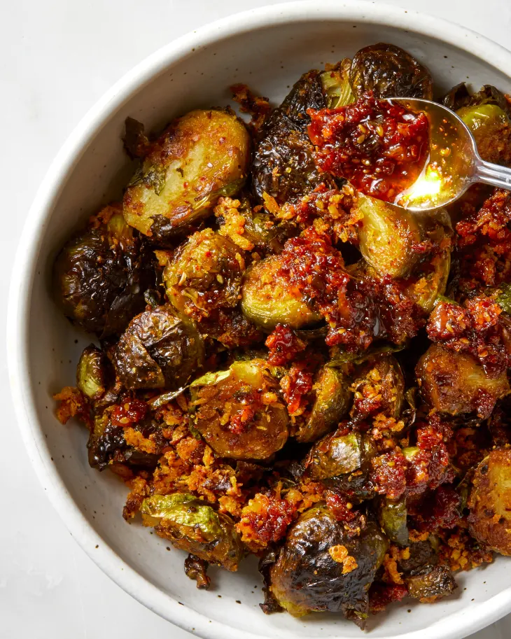

Crispy Chili Flake Brussels

Flavorful Brussel Sprouts with a Crispy Kick!
Your favorite green veggie baked golden brown
with your choice of crispy chili sauce!
Ingredients
- 1 pound Brussels sprouts
- 2 tablespoons olive oil
- 2 tablespoons chili crisp sauce
- 1/2 teaspoon kosher salt
Steps
- Preheat oven to 425°F. Meanwhile, trim the bottoms from Brussels sprouts and halve.
- Place Brussels in a large bowl and toss with olive oil, chili crisps and salt. Transfer to a
rimmed baking sheet.
- Roast Brussels for 10 minutes or until desired doneness is reached. Enjoy!